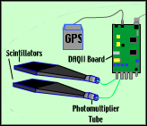

The QuarkNet cosmic ray muon detector includes counters,
DAQ board, power supply,
GPS receiver, and cables.
Each detector has up to four counters. Here are two counters,
each consisting of a scintillator
and photomultiplier tube
connected to the DAQ board.
